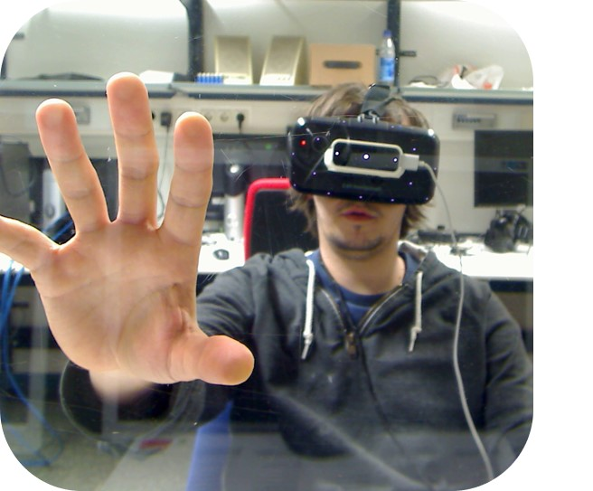
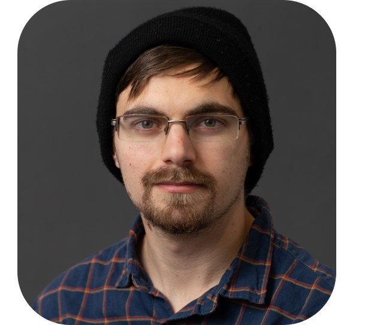
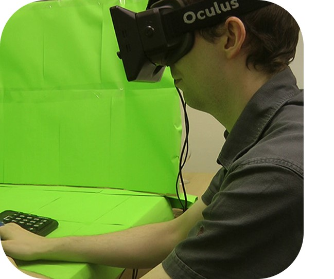
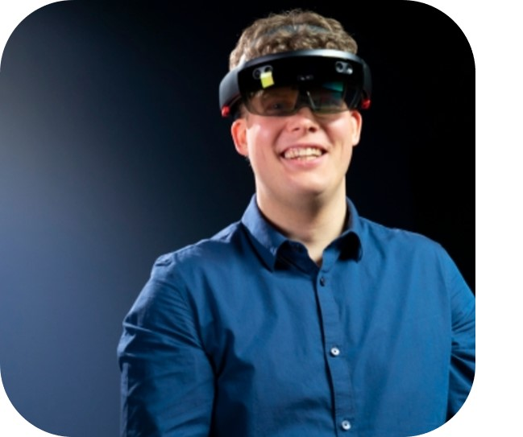
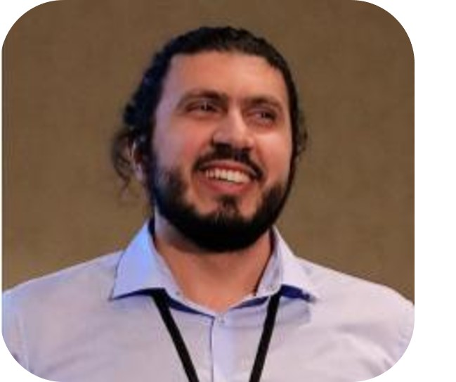

People use VR in an auditorium room (source).
Extended Reality (AR/VR/MR) technology is becoming increasingly affordable and capable, becoming ever more interwoven with everyday life. HCI research has focused largely on innovation around XR technology, exploring new use cases and interaction techniques, understanding how this technology is used and appropriated etc. However, equally important is the investigation and consideration of risks posed by such advances, specifically in contributing to new vulnerabilities and attack vectors with regards to security, safety, and privacy that are unique to XR. For example perceptual manipulations in VR, such as redirected walking or haptic retargeting, have been developed to enhance interaction, yet subversive use of such techniques has been demonstrated to unlock new harms, such as redirecting the VR user into a collision. This workshop will convene researchers focused on HCI, XR, Safety, Security, and Privacy, with the intention of exploring safety, privacy, and security challenges of XR technology. With an HCI lens, workshop participants will engage in critical assessment of emerging XR technologies and develop an XR research agenda that integrates research on interaction technologies and techniques with safety, security and privacy research.
The workshop will revolve heavily around interactive discussions which will be facilitated within three panel sessions, each focusing on topics and themes that are representing the submissions. Participants will present their work in a 10-minute talk as part of their panel session. Each panel session will start with introductions and short paper presentations, followed by a panel discussion, including audience questions. The panel will consist of one author of each submission, one organizer, and/or external expert. Organizers will moderate the panel and facilitate the discussion. The external expert(s) will be invited to add further expert perspectives to the discussion. The workshop will end with a final discussion panel consisting of volunteers of the former sessions and a subset of organizers and external experts.
The workshop is planned as a one-day virtual event. This helps us to be able to engage and lead a discussion with attendees that will not travel to CHI 2022. As an infrastructure we will use the streaming service provided by CHI 2022 or alternatively setup own instances of Big Blue Button or Zoom. The discussion during the panels will work as the main form of engaging with the individual topics. All participants will be able to contribute to the discussion by raising hands or writing in the chat. Throughout the panel discussion, multiple organizers will monitor the chat and help participants raise questions and participate in the discussion.
The tentative schedule for the workshop: April 25th, from 15:00 CEST (14:00 BST / 09:00 EDT) to 23:00 CEST.
Note: This workshop will not be recorded or streamed.
Title: Security and Privacy for Extended Reality: The Next 10 Years
Bio: Franziska (Franzi) Roesner is an Associate Professor in the Paul G. Allen School of Computer Science & Engineering at the University of Washington, where she co-directs the Security and Privacy Research Lab. Her research focuses broadly on computer security and privacy for end users of existing and emerging technologies. Her work has studied topics including online tracking and advertising, security and privacy for sensitive user groups, security and privacy in emerging augmented reality (AR) and IoT platforms, and online mis/disinformation. She is the recipient of a Consumer Reports Digital Lab Fellowship, an MIT Technology Review “Innovators Under 35” Award, an Emerging Leader Alumni Award from the University of Texas at Austin, a Google Security and Privacy Research Award, and an NSF CAREER Award. She serves on the USENIX Security and USENIX Enigma Steering Committees. She received her PhD from the University of Washington in 2014 and her BS from UT Austin in 2008. Her website is at www.franziroesner.com.
We invite two types of submissions: a 2-page position statement or a 4-page research statement. The 2-page position statement can be a motivation of interest and present an opinion piece or critical position that fits into the larger discussion and topics of the workshop (contribution type “Opinion” as defined by Wobbrock and Kienz, 2016). The 4-page research statement can be a presentation of already ongoing or planned research work in the topics of the workshop.
\documentclass[sigconf]{acmart}.Exemplar topics might come from within the field of, but are not limited to:
Once accepted, one author will have the chance to present their work in a 10-minute talk, followed by participation in a 30-40 minute panel discussion around the topic of the submission. The workshop will consist of three panel session, each consisting of four authors, one organizer and one external expert. We are highly encouraging submissions that are presenting new perspectives on XR, HCI and Safety, Security and Privacy. Submissions are not expected to be finished research projects but should be seen more as motivational and/or provocative piece. The workshop organizers aim for a mix of participants in terms of experience and research topics to maximize diversity of interests and viewpoints at the workshop.
Please note that one author of each accepted position paper must attend the workshop. Attendance can be either in person or remote. All workshop participants must register for both the workshop and for at least one day of ACM CHI 2022.
|  |
Jan Gugenheimer Jan Gugenheimer (www.gugenheimer.com) is an Assistant Professor at the Institute Polytechnique de Paris. His research focuses around upcoming social challenges for mixed reality technology and how to embed HMDs into the fabric of our daily lives. |
|
Wen-Jie Tseng Wen-Jie Tseng (www.wenjietseng.com) is a 2nd year PhD student at Telecom Paris, IP Paris. His research explores safety issues in XR, particularly focusing on physical harm in VR. |
|  |
Abraham Mhaidli Abraham Mhaidli (mhaidli.github.io) is a PhD Candidate at the School of Information at the University of Michigan. His research explores ethical issues in Extended Reality (XR) contexts, with a particular focus on XR advertising. |
|
Jan-Ole Rixen Jan-Ole Rixen (www.uni-ulm.de/in/mi/institut/mitarbeiter/jan-rixen/) is a 3rd year PhD student at Ulm University in Germany. His research focuses on exploring how the introduction of XR and the ability to augment people can impact interpersonal communication. |
|  |
Mark McGill Mark McGill (www.markmcgill.co.uk) is a lecturer (assistant professor) in the School of Computing Science at the University of Glasgow. His research explores the future of XR productivity (e.g. virtual workspaces, ergonomics, augmented peripherals) and XR-enabled passenger experiences. |
|  |
Michael Nebeling Michael Nebeling (www.michael-nebeling.de) is an Assistant Professor at the University of Michigan. In his prior research, he developed novel XR prototyping methods and tools with the goal of empowering novice XR content creators. In his current work, he studies how to best guide XR designers in creating safe and inclusive XR experiences. |
|  |
Mohamed Khamis Mohamed Khamis (www.mkhamis.com) is an Assistant Professor at the University of Glasgow. His research is at the intersection of Human-Computer Interaction and Security. He is interested in understanding the privacy, security and ethical challenges in XR and proposing novel solutions to mitigate said challenges. |
|
Florian Schaub Florian Schaub (www.si.umich.edu/people/florian-schaub) is an Assistant Professor at the University of Michigan. His research is at the intersection of privacy, security, human-computer interaction, and public policy. He is interested in understanding the privacy and safety implications of emerging technologies such as XR and advance human-centric solutions for safe user experiences. |
|
Sanchari Das Sanchari Das (www.drsancharidas.com) is an Assistant Professor at the University of Denver (Computer Science). Her research lab - Inclusive Security and Privacy - focused Innovative Research in Information Technology (InSPIRIT) focuses on enhancing privacy and security for Online Communication and Devices including IoT, AR/VR/MR, and others. |
This workshop was partially conducted within the HARMFULVR JCJC project (ANR-21-CE33-0013) funded by French National Research Agency (ANR).
.jpg){kind=link}